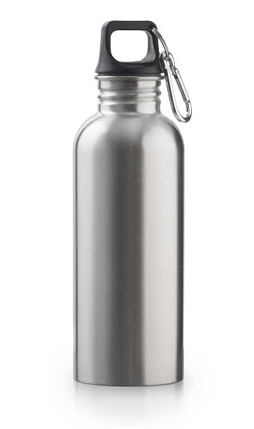
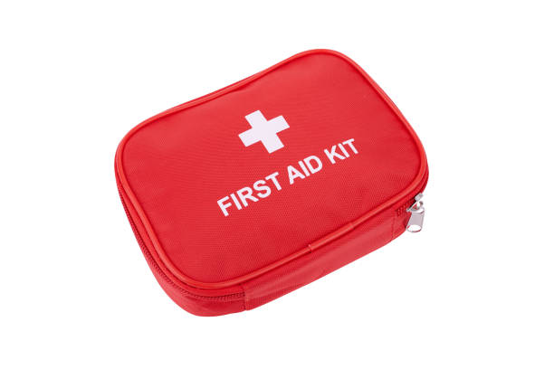
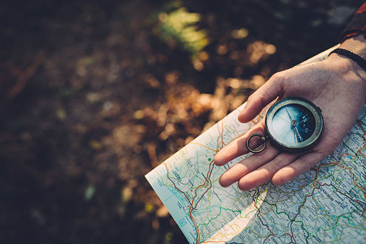
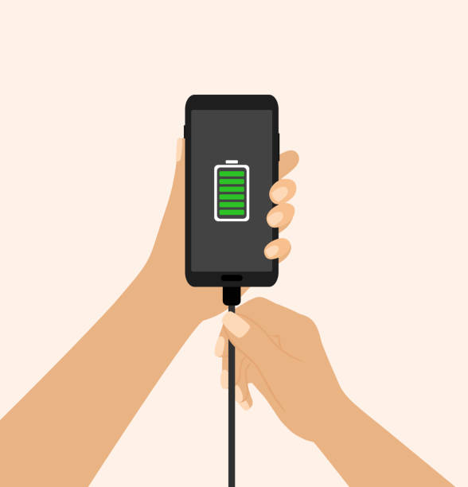
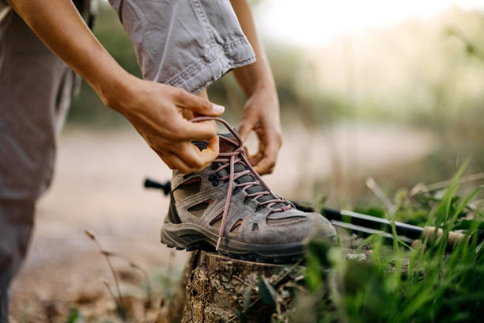

Essential Hiking Gear
While hiking can be very fun, it's important to remember that it also can be very dangerous. We have made the below list of essential items to bring on every hike in case of an emergency.
Water Bottle:
No matter how experienced you are at hiking, or how short your hike is, bringing water is extremely important. Always bring AT LEAST one bottle of water per person for each day you plan on hiking. Multiple bottles of water should be brought if you plan on hiking very long trails or trails with a lot of elevation changes.

First Aid Kit:
Scrapes, cuts, bruises, and many other kinds of injuries are common from hiking. Prepare a first aid kit in case someone gets hurt during your trek.

Map and compass, or a GPS:
Getting lost in the wilderness is a real risk during hiking, and so every hiker should have a backup plan to help them to get back on course.

A Charged Cell-Phone or Smartphone:
Even the most prepared and experienced hikers may find themselves in a situation where they need help. Always make sure to bring a CHARGED cell-phone or smartphone so that you can contact emergency services just in case.

Snacks:
Hiking is exhausting, and burns a lot of calories. Being able to recoup some of those calories with some snacks can be just what your body needs to keep trekking on.
Closed-Toe Shoes:
There are plently of objects on trails that can cut up or trip you during a hike. Rocks, roots, thorns, and many other things can hurt your feet or cause you to lose your balence. It's very important to always wear closed-toe shoes to prevent from potential injuries. On beginner trails it may be okay to just bring a normal pair of shoes, but on harder trails make sure to bring boots specifically made for hiking.
